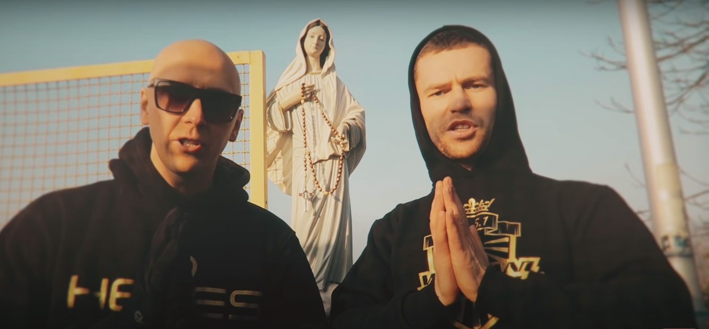
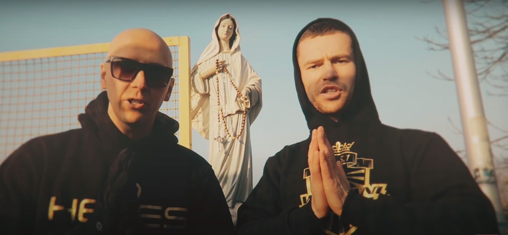
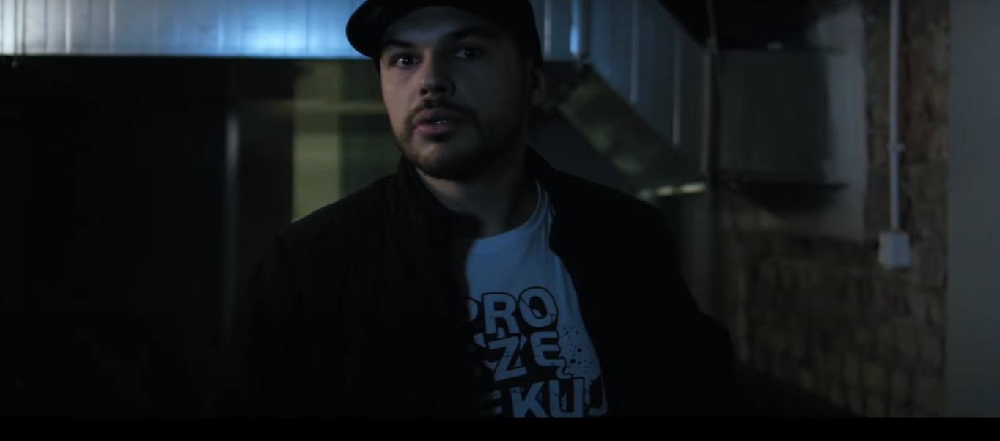
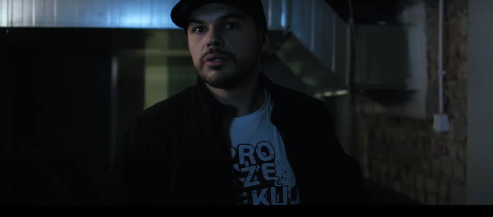

KATOLICKI RAP
HERES / WZN



Tau


„Będziesz miłował Pana, Boga swego, z całego serca swego i z całej duszy swojej, i z całej myśli swojej, i z całej siły swojej. A drugie jest to: Będziesz miłował bliźniego swego jak siebie samego”. Ew. Marka 12:30–31